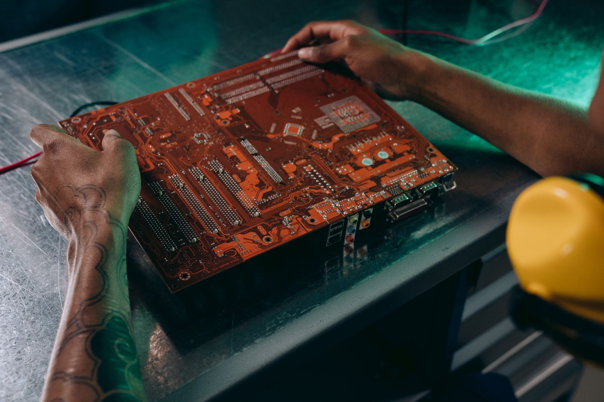

미중 규제 충돌, 韓 파운드리 갈림길 선명해졌다

미국 상무부 BIS는 2025년 10월부터 첨단 AI칩(A100급 이상) 수출허가 의무화를 유지하고 있으며, 엔비디아의 중국향 H20 판매 차단이 2026년 이후까지 지속될 전망이다. SK하이닉스가 공급하는 HBM3E의 중국 내 최대 수요처였던 화웨이·바이두 서버 증설 계획이 사실상 동결됐다.
중국은 2023년 8월 갈륨·게르마늄, 2024년 12월 안티모니·흑연에 이어 2025년 헬륨 수출통제를 시사하는 등 소재 전선을 6개 품목 이상으로 확대했다. 미국 반도체 수출허가 심사와 중국 소재 수출허가제가 동시에 가동되면서 한국 팹의 소재 납기는 평균 18주로 고착됐다.
삼성전자는 2024년 파업 리스크가 미국 팹리스 고객사 이탈의 촉매로 작용했다. 퀄컴·AMD 등 주요 미국 팹리스 4개사가 삼성 파운드리 의존도를 2025년 내 20% 이상 축소하는 조달 다변화 계획을 공개 또는 시사했다. TSMC 2nm 공정(2025년 양산) 전환 속도가 이를 가속하는 구조다.
한국 정부는 2025년 '반도체 5개년 2배 확대' 계획을 발표하며 용인 클러스터에 300조 원 투자를 목표로 설정했다. 그러나 East Asia Forum 분석에 따르면 현재 한국 반도체 장비의 미국 의존도는 70% 이상, 중국 시장 매출 비중은 삼성·하이닉스 합산 약 30%로 양방향 노출이 동시에 압박받는 구조다.
미중 규제 충돌의 본질은 한국 반도체 산업의 '매출 구조 재편 강제'다. 중국향 메모리·파운드리 수요가 막히는 동시에 미국 팹리스 고객까지 TSMC로 이동하면, 삼성·하이닉스는 매출 기반을 새로운 고객군(인도·유럽·동남아 팹)으로 교체해야 한다. 교체 속도가 매출 감소 속도를 따라가지 못하면 2026~2027년이 실질적 실적 골짜기가 된다.
공급망 인텔리전스 관점에서 이번 국면의 핵심 신호는 '규제의 동기화'다. 미국 EAR 강화와 중국 소재 수출허가제가 같은 분기에 움직이는 패턴이 3회 반복됐다. 이는 양국이 독립적으로 움직이는 게 아니라 상대방 조치에 대한 보복 타이밍을 조율하고 있다는 뜻이며, 한국은 두 시스템의 교차점에서 규제 충격을 2배로 흡수하는 구조에 놓였다.
삼성 파운드리의 시장점유율은 2024년 기준 약 11%(TSMC 61%)로 이미 격차가 크다. 미국 팹리스 이탈이 현실화되면 삼성의 파운드리 점유율이 2026년 9% 이하로 하락할 가능성이 있다. 이는 단순 매출 문제가 아니라 첨단 공정 개발비 회수 구조 자체가 흔들리는 임계점이다.
SK하이닉스는 HBM 공급 다변화(마이크로소프트·구글·아마존 직공급 계약 확대) 측면에서 삼성 대비 유리한 위치를 확보했다. 2025년 HBM3E 12단 점유율 60% 이상을 엔비디아에 독점 공급하며 미중 규제와 무관한 미국 내 AI 인프라 투자 수혜를 직접 받고 있다.
TSMC는 미국 팹리스 이탈의 최대 수혜자다. 애리조나 N3 공정 팹 2026년 가동, 일본 구마모토 2공장 2027년 양산 계획으로 지리적 분산과 기술 우위를 동시에 제공한다. 삼성에서 이탈하는 퀄컴·AMD 물량을 흡수할 생산여력이 현재 약 15% 여유 상태로 확인된다.
국내 소부장 기업 중 미국 팹 공급망에 직접 진입한 기업(SK머티리얼즈, 솔브레인 등)은 TSMC 애리조나·인텔 오하이오 팹 수혜를 받을 수 있다. 산업부 소부장 투자지원 1700억 원 중 파운드리 소재 분야 배분이 확대되면 글로벌 팹 스펙 인증 속도가 빨라진다.
삼성전자 파운드리 사업부는 양방향 규제 압박의 최대 피해자다. 중국 매출(파운드리+메모리 합산 약 30%)이 규제로 축소되고, 미국 팹리스 고객 이탈이 동시 진행되면 2026년 파운드리 매출이 2024년 대비 15~20% 감소 시나리오가 현실적이다.
중국향 DDR5·LPDDR5를 생산하던 한국 중소 메모리 모듈 업체 10여 곳은 엔비디아 H20 봉쇄 장기화로 직격탄을 맞는다. 화웨이 서버 증설 동결로 중국 내 서버 DRAM 수요가 2025년 하반기 기준 전년 대비 약 25% 감소 추정이다.
삼성·하이닉스 주식 보유자는 '중국 매출 비중 축소 속도'와 '미국 AI 인프라 직공급 계약 건수'를 분기별 핵심 지표로 모니터링해야 한다. 중국 비중이 분기별 2%p 이상 감소하면서 미국 직공급 계약이 동시 증가하는 구간이 매수 신호다.
소부장 구매담당자는 현재 미국 팹(TSMC 애리조나, 인텔 오하이오, 삼성 테일러)의 공급망 인증 요건을 최우선 과제로 설정해야 한다. 국내 팹 납품 인증과 미국 팹 인증은 스펙 차이가 30% 이상 발생하며, 인증 소요 기간이 평균 18~24개월임을 감안하면 지금 시작해야 2027년 물량에 대응 가능하다.
산업 전략가라면 미중 규제 동기화 패턴을 추적해야 한다. BIS 규제 발표 후 60~90일 이내 중국 대응 소재 통제가 나온 패턴이 3회 반복됐다. 다음 BIS 조치(반도체 장비 대중 수출통제 추가 품목) 이후 중국의 텅스텐·인듐 통제 가능성을 선제 점검해야 한다.
실제 조달 현장에서는 — 미국 팹리스 고객사의 구매오더(PO) 조건에 '중국산 소재 사용 여부 확인서' 요구가 2025년 들어 표준 조항으로 삽입되기 시작했다. 한국 파운드리와 소재 공급사 모두 중국산 원료 비중을 서류로 소명해야 하는 행정 부담이 추가됐으며, 이 인증 체계를 먼저 구축한 기업이 미국 팹 공급망 진입에서 6~12개월 우위를 점한다.
이 포스팅은 쿠팡 파트너스 활동의 일환으로 수수료를 제공받습니다.